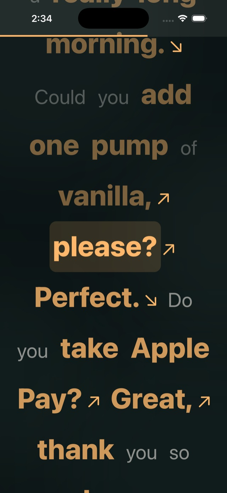
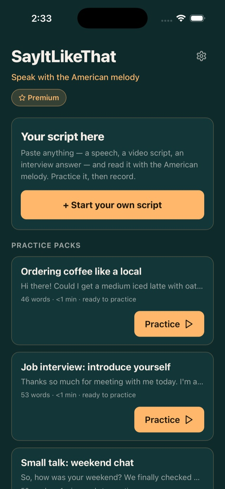
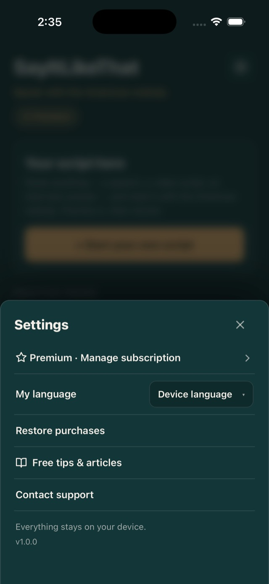

Um teleprompter que mostra a melodia
Seu roteiro rola na tela com as palavras importantes destacadas em âmbar. As palavras de conteúdo ganham força, as palavrinhas deslizam — você lê o ritmo, não só o texto.
Grave a si mesmo com legendas de melodia
Filme direto do app enquanto o roteiro destacado fica pertinho da lente. Seus olhos continuam no lugar, sua fala continua natural, e cada take fica salvo no seu celular.
Ouça a própria evolução
Reproduza seus takes lado a lado e preste atenção na melodia. Semana após semana, você vai ouvir o som chapado e robótico desaparecer — um progresso que dá para sentir.
Veja o app em ação



Ainda não quer baixar? Comece de graça.
Baixe o Checklist de 5 minutos para ficar natural na câmera — a rotina pré-gravação que recomendamos a todo mundo que fala diante das câmeras.
Quero o checklist grátis